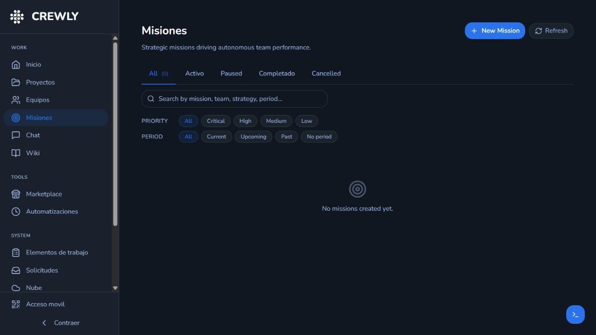
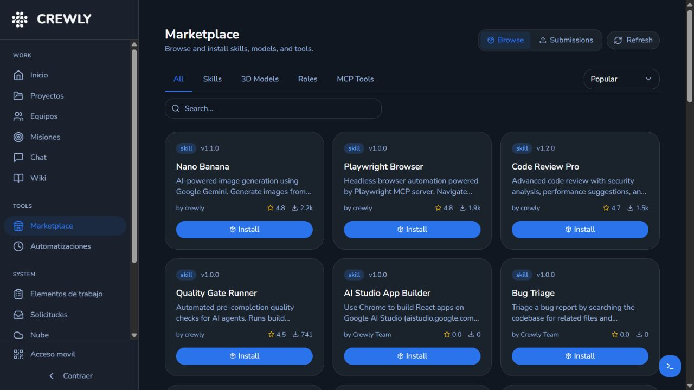
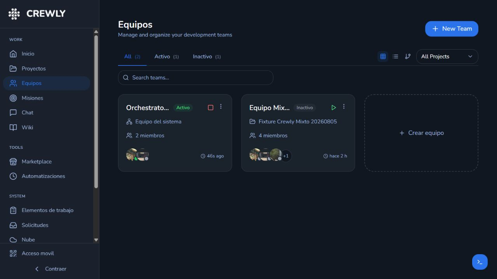

Idioma, instrucción global, runtime, concurrencia, tiempos y terminal.
Proveedores y costos
Instalación, autenticación, versión y referencia oficial de precios.
Roles
Responsabilidad, prompt base y comportamiento esperado.
Skills
Habilidades disponibles, heredadas o asignadas.
Integraciones
Slack, WhatsApp y canales externos habilitados.
API Keys
Claves de proveedores cuando una suscripción no sea suficiente.
Credenciales
Credenciales reutilizables y su estado, sin mostrarlas en logs.
Sistema
Salud, mantenimiento, backups y opciones operativas.
Costos: Crewly muestra registros internos. Comprueba la facturación final en el portal oficial del proveedor.
Supervisión, QA y herramientas

Misiones: objetivos, prioridades y periodos.

Marketplace: revisa requisitos antes de instalar.

Equipos: inicia, detén, filtra y cambia la vista.Elementos de trabajo: evidencia de ejecución y QA.
Automatizaciones
Crea tareas por horario o señales por eventos como task:verified, task:blocked o team:all_tasks_done. Añade límites claros para evitar ciclos repetidos.
Wiki, memoria y documentación
Tres capas distintas
Wiki: contenido navegable y curado.
Memoria nativa: decisiones, aprendizajes y patrones.
Memory Layer: suplemento externo opcional.
Nunca desactives Wiki o memoria nativas para usar una capa externa.
Selecciona la bóveda correcta antes de buscar una decisión o patrón.
Checklist de tu primera ejecución
Marca cada punto. El progreso se guarda sólo en este navegador.
0 de 12 completados
Problemas frecuentes
El runtime está instalado, pero no funciona
Completa el login dentro de Ubuntu WSL2 y confirma en Proveedores y costos que la autenticación sea “Sí”.
El agente no inicia
Revisa el comando CLI en Configuración > General y abre la terminal para ver el error real.
La tarea no aparece
Confirma el canal del equipo en Chat y después revisa Solicitudes y Elementos de trabajo.
El modelo ejecutado no coincide
Revisa selección automática/manual, capability class, fallback y recibo de ejecución.
El costo dice “No disponible”
Ese dato no fue entregado por el proveedor. No debe interpretarse como costo cero.
Una parte aparece en inglés
Algunas etiquetas o contenido de terceros pueden conservarse. Código, rutas, APIs y salida cruda no se traducen.
Necesito más detalle
Abre el documento completo o las guías individuales enlazadas en las tarjetas de módulos.